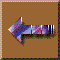

Explosiveness
The explosiveness of an observed volcanic eruption is estimated by the calculated force of the eruption. Experiments have shown that when water comes in contact with hot magma, the eruption is much stronger- this is known as hydro-volcanism.
For pre-historic eruptions, the explosiveness is estimated by the degree of fragmentation of small volcanic particles. A more explosive eruption will "shatter" volcanic tephra much more than a less explosive eruption.
 Return to
Volcano Web